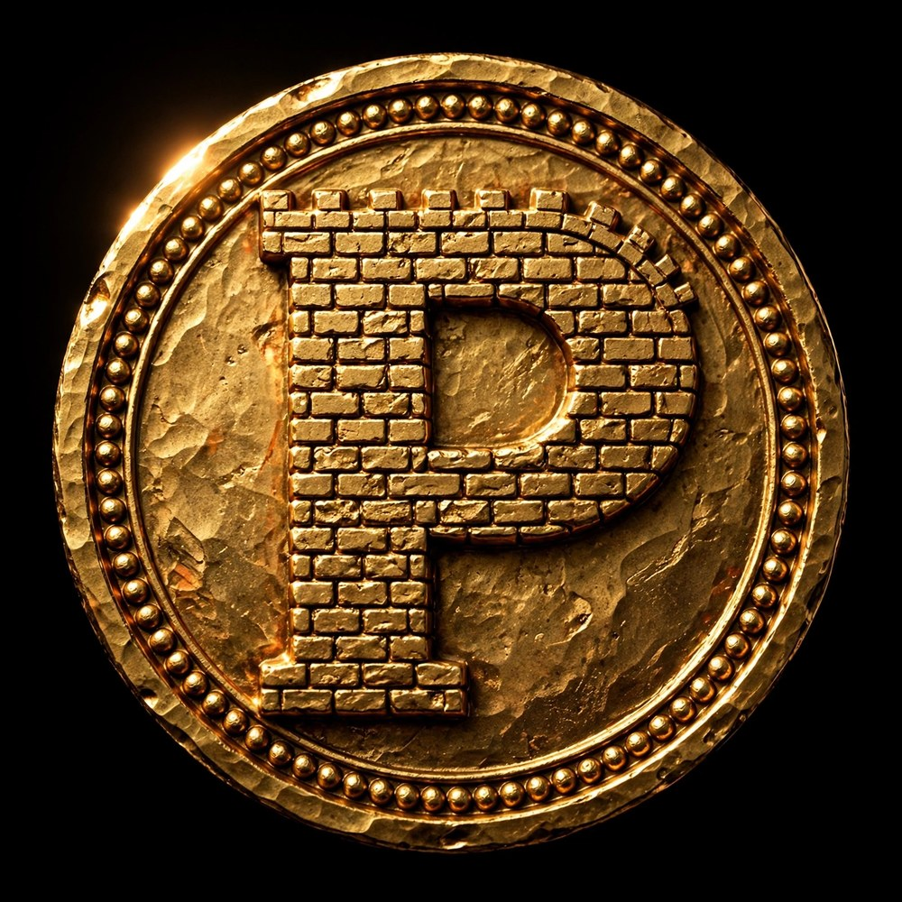
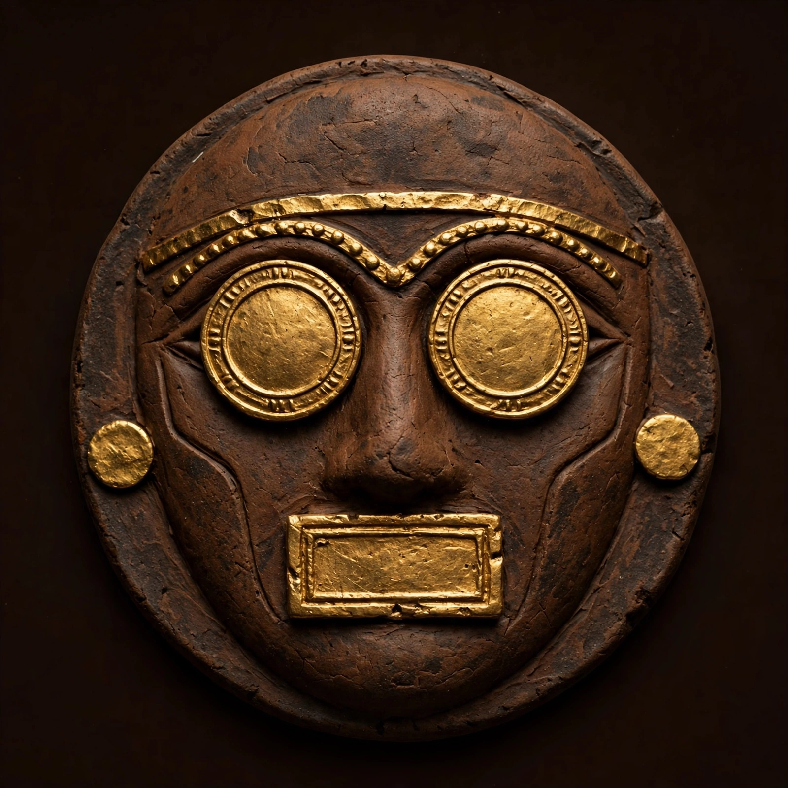

The living world of this town needs a WebGL-capable browser. This is its still face — every word, record and door below is the town itself.
Europe's First Town of Record
Provadia
You are not reading about a town. You are standing in one.

PROVADIA is a place, not an investment. Holding it names you a Bricklayer in the town registry and gives you a vote on the Wall’s fate — and nothing else: no redemption, no yield, no rights, no expected return.
Scroll, traveller — the street will take thee down to the Wall.
The Gate
The Gate
Every town of record begins at a gate. Ours is watched by Solnik — last of the salt-makers, keeper of the Wall and the book. He stands at the door of this town, and his tales are true: what he tells thee, he can show thee.
Provadia · The Front Door
Solnik

Hail, traveller, and welcome to Provadia — a town that was old when Rome was a pasture. I am Solnik — last of the solniks, the salt-makers who founded this town — keeper of its Wall and its book. Ask me of the gold, of the salt, of the graves by the sea — for what I tell thee, I can show thee. One claim, one Witness, or it never happened.
PROVADIA is a place, not an investment. Holding it names you a Bricklayer in the town registry and gives you a vote on the Wall’s fate — and nothing else: no redemption, no yield, no rights, no expected return.
This door shows the way; it does not hold the conversation. Solnik's seat of conversation is his Chamber, at the head of the Record — there his tales are told in full, his journeys begin, and his living voice will wake when the town's host stands. Until then the desk is open: support@provadiacoin.com.
Walk to the Captain's Chamber →The Coin
The Coin
The Fortress P — the name of the coin, struck in salt bricks and crowned with seven battlements. It is the first thing the town shows thee, and the last it lets thee forget.
Turn it over. The back keeps secrets: tilt it, and the age looks back — a sceptre, a mask, a bull, a ring — rising out of the gold one at a time, around the letter that never leaves.
In this still face the coin rests, face up — its turning, its tilting and its secrets live in the living town.
The coin's only name on-chain:
9UE6NStA9pRZ5xagrK1FNy3vybmQVL2VaKB7BNpvpump
The Coin Is Alive
THE FORTRESS P
Tilt it far, both ways — the back keeps secrets. On a computer, thou mayest also drag the coin itself.
The Golden Wall
The Golden Wall
0 / 47
bricks laid · 0 grams of gold in the vault
One slot waits — outlined, patient. A brick appears here only when it exists: bought, receipted, photographed, its serial written in the book. The Wall is the town's shadow of the truth; it has never shown a brick that was not real.
At 47 bricks — or the coin's first birthday — the Wall's fate is voted by the Bricklayers: burial at Provadia, or donation to the Varna Regional Museum. It can never be sold. It is never backing, and never redeemable.
The Night Brick
Every night at 21:00 UTC the town posts the counter and one true fact, and the Bricklayers answer: 🧱
next Night Brick in — 21:00 UTC
The town bell tolls only when the ledger rings it — once per brick laid. The bell has never rung.
The Book of Bricklayers
The Book of Bricklayers
No name is written yet.
The first name enters this book when the first brick is laid in the Wall — with its receipt beside it. Names and brick numbers only. Never holdings, never value. The book grows only when the Wall does, and the book itself now stands with the Record; the family's own registry stands on the Ecosystem page.
My brick is in the Wall — that sentence is the whole of the treasure.
The Record
The Record Stands in Its Own Hall
Everything that needs to be known — the Day-Book and its Verifier, the Three Vaults and the tithe book inside the first of them, the market face, the Fee Card, the Charter, the family's law and its money split shown plainly — now stands on the Record page, with the Captain's Chamber at its head. Nothing was lost in the move: the chain still verifies from this very door, in your own browser.
Recomputing every entry in your browser…
The same proof the Record Hall renders in full — every entry, every vault ledger, recomputed on your own machine.
Walk to the Record →The Umbrella
A Ground Where Coins Are Born
Provadia is not one coin. It is a town with an umbrella over it — and under that umbrella, a founder's own coin can be born, under one covenant, receipted at birth. The family's whole law is written on the Record page; the family's street stands on the Ecosystem page; and the door itself is a knock, not a signup.
Learn the family → Knock → See the family →The Road
The Road
A roadmap here is not a promise list. It is a road: paved exactly as far as we have travelled, and not one inch further.
-
The Foundation
Brick #1, bought with the founder's own money and receipted in the open · the Charter · the Day-Book opens
-
The Promise Machine
the site grades its own promises, in public, forever
-
The Liveness Layer
the town reports its own heartbeat, silence included
-
The Signed Solnik
the town's officer, auditable
-
The Town Build-Out
streets rise as the Wall rises
-
The Brick Lock
the Wall's custody, locked in code
-
The Fee Card
every fee, receipted
-
The Covenant Kit
the covenant, whole, for anyone to check
No dates are promised on this road, beyond the Tuesdays of the Seven Secrets and the coin's first birthday.
The True Story
The True Story
What the ground says
Found by accident — In October 1972 an excavator operator, Raycho Marinov, struck gold in Varna's industrial zone and carried a shoebox of it to the museum. The cemetery was dug from 1972 to 1991.
The dating — Radiocarbon puts the Varna cemetery in use about 4560–4450 BC — some 6,500 years ago. Provadia-Solnitsata made salt from about 5500 BC; its fortified age is 4700–4200 BC.
The gold — More than 3,000 objects, over 6 kg, in 28 kinds: sceptres, diadems, bracelets, beads by the thousand, rings and ring-idols, gold cattle, gold-painted pottery. And copper, flint, carnelian, and shell from the Mediterranean.
The chief — Grave 43 held a man of 40–50 with over 990 gold objects, 1.5 kg in all, and a sceptre — a stone axe on a gold-sheathed shaft. The museum calls him most likely a chief and priest. No name survives; his people had no writing.
The fortress — The salt town stood behind stone walls up to 3 metres thick, with bastions and a gate — raised, the ground shows, over salt made in tons.
Interpretation — Not Settled Fact
Professor Vasil Nikolov, the salt town's excavator since 2005, holds that salt was money — that the salt brick was currency and Provadia Europe's first mint, and that salt wealth explains Varna's gold. He admits there is no direct evidence for how the trade worked; other scholars call 'Europe's oldest town' hyperbole. In this town we tell it as what it is: one professor's reading of the ground.
The Support Desk
The Support Desk
The town's desk now stands at the Forum — where the people talk, where the support standard is written in full, and where every true door of the town is listed. Two doors stand open there: the email desk, answered on the watch around the clock, and the Captain himself, in his Chamber on the Record page.
We never DM first. If a door is not listed at the desk, it is not ours.
Walk to the Forum →PROVADIA is a place, not an investment. Holding it names you a Bricklayer in the town registry and gives you a vote on the Wall's fate — and nothing else: no redemption, no yield, no rights, no expected return.
Salt pays.
The Seven Secrets — Commitments
Every secret was committed here before it was told. Each hash is the SHA-256 of a salt plus that secret's final text. When a secret is revealed, its salt is published with it — so anyone can recompute the hash and check it against its line.
- Secret 1 — SHA-256: bd87e81783b985c67c058bbc03f040a7e46ee47b692ebbe98e8d56b42408aa5a
- Secret 2 — SHA-256: 4c708c9c9fd0235afe4bab722f0cbdc9399ef37e740014fcbbb38611e51b4406
- Secret 4 — SHA-256: 7323eed62295b991d55dca3cf29b58e7cb86db59d18b63e46010a175457ec6f9
- Secret 3 — SHA-256: 08e5d41ffae7ca942b757971f5a85f6076f4c3d3c1db054ae194757fd49755ec
- Secret 5 — SHA-256: f81757e0fc7d275fe033169782a44e1dadccdac1d8b958007ef209e82bc23edf
- Secret 6 — SHA-256: b4812005651022572b55932fd46ba4b06c73462d003819f9c7847875d8d86053
- Secret 7 — SHA-256: 4058b2e9586e38df6465b2f91ff4f9820ac9e81d874411c6687aa31274e41b7b